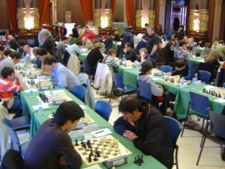
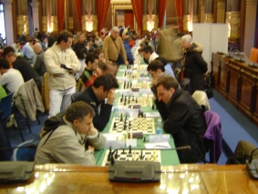
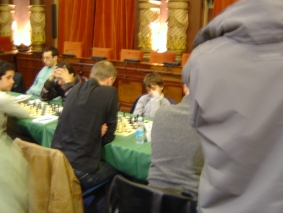

Agustin de Leitza Xake Elkartea |
| » hasiera » elkarteko bazkideak » taldekako txapelketa » azken txapelketak » loturak |
Donostiako 2009ko Irekia09-04-12Ohi denez Aste Santu honetan Donostiako irekia jokatu da, eta azken urteetan bezala, aurten ere Donostiako udalaren batzar aretoan jokatu da. Aurten Espinek bakarrik jokatu du, eta nahiz eta puntu Elo batzuk galdu izan, partida guztietan azkeneraino borrokatu egin du, eta partida batzuetan zeukan abantaila alferrik galdu ere. Azkenean 71. postuan bukatu du. 
Espinek 8. txandan jokatzen, haien atzetik gainontzeko aretoa. Txapelketa oso lehiatua egon da, azpimarratzekoa da egon den maila, eta maisu eta promesa gazteen nahasketa. Hasierako zerrendan faborito nagusia GM Alexander Delchev zen 2648 Elo puntuekin, baina ezin izan du pronostikoak bete, batez ere azkenaurreko txandan MI Mikel Huerga nafarraren aurka taulak egin baitzituen eta azken txandan GM beteranoarekin Roberto Cifuentesen aurka galdu baitzuen. Azkenean sailkapenean lehen postuan 5 jokalari sailkatu dira, zein gogorra txapelketa izan den isla. 
Lenengo mahien bista 8. txandan. 
Jaime Santos 8. txandan jokatzen GM Marko Tratarekin, emaitza: taulak. Txapelketaren
laburpena (pdf)
Partidak (guztiak ager arte ez dira ipiniko) |